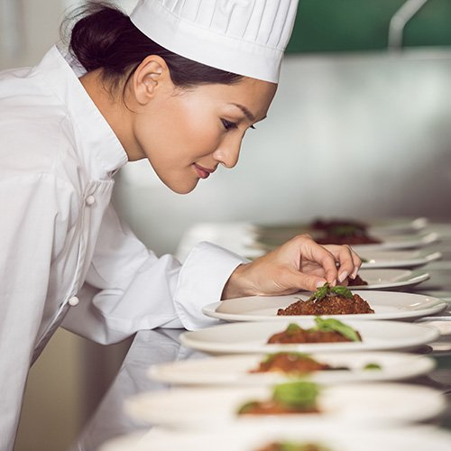

The T2RP Restaurant - your gourmet restaurant in Zurich
Welcome to the “T2RP”, the elegant gourmet restaurant in the heart of Zurich. As one of the top restaurants in Switzerland's most vibrant city the T2RP combines Italian Haute Cuisine, excellent service and fascinating ambiance. Take all the time you need for your “Contemporary Fine Dining” experience in a fresh, regional and seasonal way. The 2-Michelin stars and 18 GaultMillau points awarded chef Laurent Eperon impresses in our gourmet restaurant in Zurich with creative compositions that correspond perfectly with high quality wine from the greatest vineries worldwide. For an all-round successful visit to the gourmet restaurant, a pleasant atmosphere is very important. Restaurant manager Aurélien Blanc and his team will advise you during your culinary journey with a high level of dedication and highest expertise; and all this in front of a breath-taking park scenery
We are proud of our interiors.